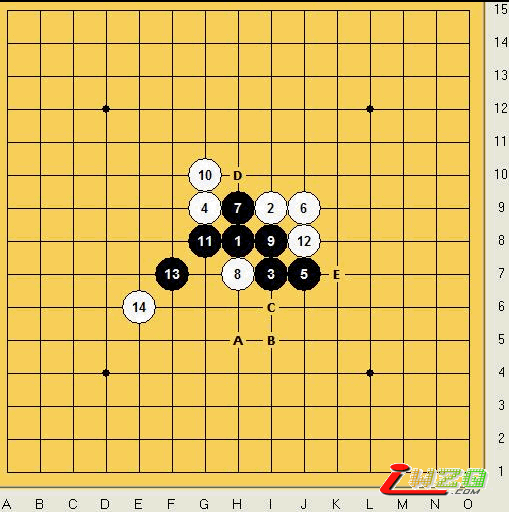
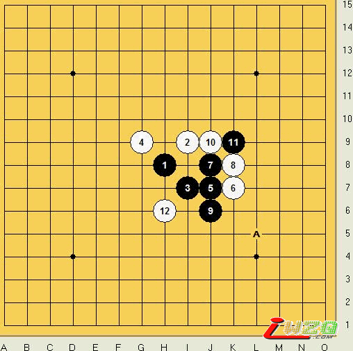
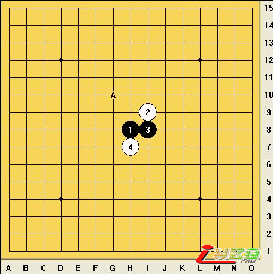
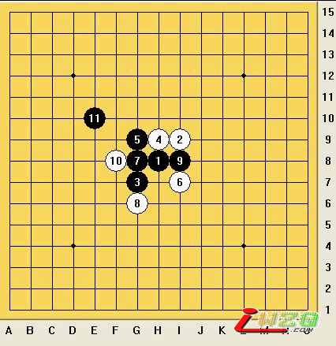
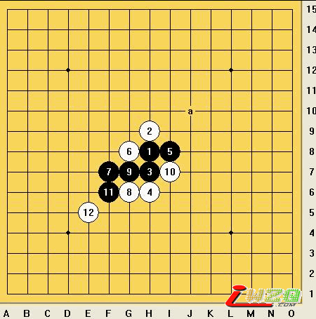
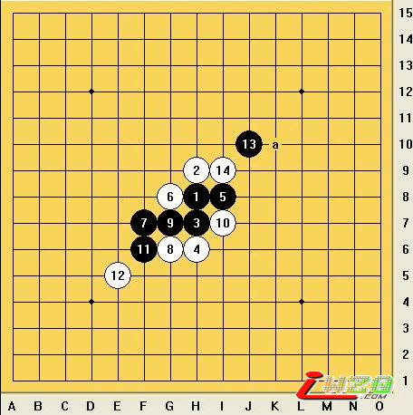

真心：五子棋如何“做棋”
#1 真心：五子棋如何“做棋” 作者：有志青年 发表时间：2008-11-10 14:38:30
五子棋“做棋”水平的高低，直接关系到全局，同时也是一个棋手综合能力的体现，今天我来通过“谱月”开局的一个例子给大家说说基础的做棋
一、四、三做杀，声东击西

上图，黑棋发展的重点是在棋盘下半部分，但是黑棋左右的间隔比较远，这个时候必须通过一个子来连接左右，增加在下半部分的发展。A、B、C、E点，都是我们做棋的选择，但是这里A点是做棋的起点，也是关键点。黑棋利用做杀，牵制白棋，从而转向右下发展，A点起了重要的转折作用。如果我们选择D点，就是一个平衡点，不是太好。

上图，黑棋A点是最好的做棋。
四、三做杀，声东击西。这个是最基础的一种做棋形式。
二、斜三角式做棋,拓展空间.

上图为云月开局-A点是拓展好手,A点后黑必胜

上图是斜月开局的变化,11手做棋,打开新的领域


以上2图是松月做棋拓展的例子,棋局一开始黑白棋在棋盘中部激烈争夺,A点后黑棋拓展,力图摆脱白棋的束缚,A点后黑棋必胜
#2 Re:真心：五子棋如何“做棋” 作者：白山蓝天 发表时间：2008-12-30 16:40:49
有些地方还是不太明白#3 Re:真心：五子棋如何“做棋” 作者：五星若连珠 发表时间：2008-12-30 21:25:11
我也是，希望哪位高手把下面几步摆完，到胜利为止。。#4 Re:真心：五子棋如何“做棋” 作者：阿花哥 发表时间：2009-1-5 22:53:58
 我正在捉摸做棋的事，哈哈，有志青年真是牛！
我正在捉摸做棋的事，哈哈，有志青年真是牛！
#5 Re:真心：五子棋如何“做棋” 作者：阿花哥 发表时间：2009-1-6 0:24:56

#6 Re:真心：五子棋如何“做棋” 作者：阿花哥 发表时间：2009-1-6 0:28:51
 这个做棋找最佳点有什么方法吗，对手防得严时，感觉很头疼！
这个做棋找最佳点有什么方法吗，对手防得严时，感觉很头疼！
#7 Re:真心：五子棋如何“做棋” 作者：师大波 发表时间：2009-1-21 14:48:42
受教了#8 Re:真心：五子棋如何“做棋” 作者：远离风尘 发表时间：2009-1-21 16:06:33
#9 Re:真心：五子棋如何“做棋” 作者：连珠小白 发表时间：2009-1-30 19:55:03
呵呵，学习了#10 Re:真心：五子棋如何“做棋” 作者：缘来 发表时间：2009-2-15 10:12:08
真心
通俗易懂
#11 Re:真心：五子棋如何“做棋” 作者：极品商人 发表时间：2009-3-1 18:18:46
佩服！你真的很强！学习了！#12 Re:真心：五子棋如何“做棋” 作者：一剑寒霜 发表时间：2009-3-1 22:42:31
晕，我回复的内容怎么看不到#13 Re:真心：五子棋如何“做棋” 作者：来客沙丝 发表时间：2009-3-4 21:44:09
好像没说透，或者我这样的还没到境界？为什么是这样做而不是那样作？“做”的好处在哪里体现呢？
#14 Re:真心：五子棋如何“做棋” 作者：hzhzh 发表时间：2009-3-5 16:59:10
最后一个，希望有详解
#15 Re:真心：五子棋如何“做棋” 作者：十八子 发表时间：2009-3-10 9:16:12
呵呵 谢谢了！希望在多点儿啊！#16 Re:真心：五子棋如何“做棋” 作者：袁智睿 发表时间：2009-3-10 12:59:33
希望有详解#17 Re:真心：五子棋如何“做棋” 作者：虚心 发表时间：2009-3-10 13:19:27
很好，很感谢楼主
#18 Re:真心：五子棋如何“做棋” 作者：田园雪 发表时间：2009-8-27 13:17:26
又有的学了#19 Re:真心：五子棋如何“做棋” 作者：最爱绿茶 发表时间：2009-10-23 22:36:42
应该再说得细一点
#20 Re:真心：五子棋如何“做棋” 作者：小頑童 发表时间：2009-11-7 16:19:44
感謝...基本上都明白.#21 Re:真心：五子棋如何“做棋” 作者：法源海 发表时间：2009-11-8 21:20:04
其后变化如何？水平不够阿#22 Re:真心：五子棋如何“做棋” 作者：浙杭石头 发表时间：2010-5-22 15:43:34
Re:真心：五子棋如何“做棋”
以后变化很大，如何必胜？
#23 Re:真心：五子棋如何“做棋” 作者：勇士 发表时间：2010-5-22 19:57:02
略懂 略懂
#24 Re:真心：五子棋如何“做棋” 作者：无志气广林 发表时间：2010-5-23 10:32:02
不错！学习一下！#25 Re:真心：五子棋如何“做棋” 作者：猪无戒 发表时间：2010-5-24 14:27:47
好！！！
#26 Re:真心：五子棋如何“做棋” 作者：千棋雪 发表时间：2012-7-9 12:56:13
做棋就是选好的做棋点，看了之后多少明白一点，谢谢老师。